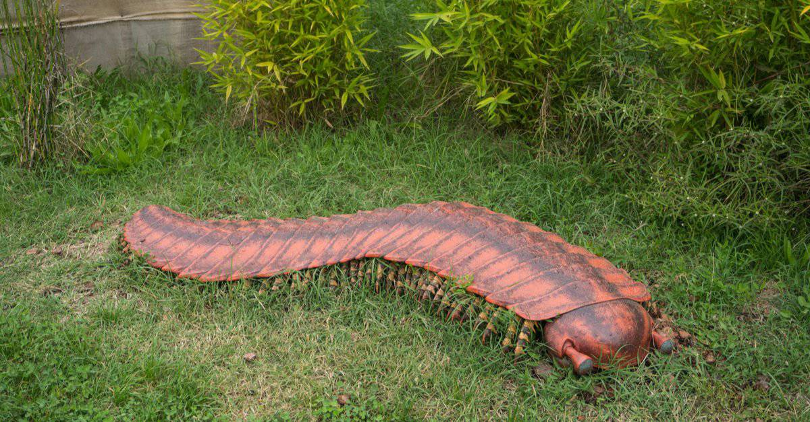

The arthropleura, now extinct, was once able to grow larger than eight feet.
©FABRIZIO CONTE/Shutterstock.com
If the alien features and multitudinous legs of a millipede or centipede aren't enough to give you nightmares, meet the Arthropleura — and be lucky that these are one of the many megafauna species that are extinct. Their shape would be familiar to anyone who's encountered a millipede, but it's their size that really makes them such apparently scary animals. The Arthropleura was capable of reaching a length of over eight feet. That makes them the largest invertebrates on record, and it was once believed that they were voracious and wandering predators. But more recent research indicates these rank among creatures that are harmless despite looking frightening.
Ultimately, changes in the environment led to the downfall of this massive invertebrate. High concentrations of oxygen in the Earth's atmosphere and a distinct lack of large predators allowed Arthropleura to thrive for a time, but this millipede's unique physiology eventually became unsustainable.
While none of them can match Arthropleura in size, you can learn about the five largest millipedes still alive here.